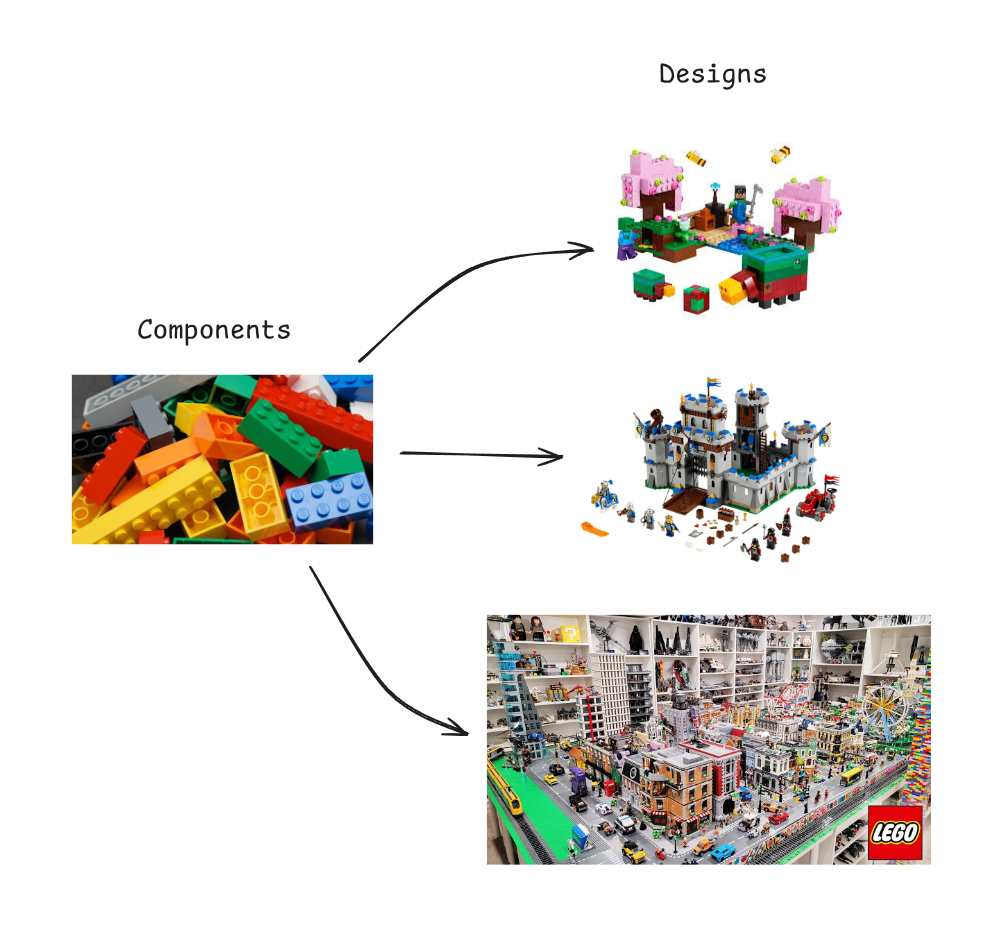
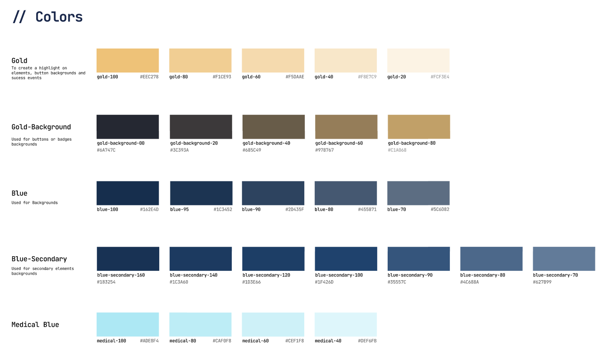
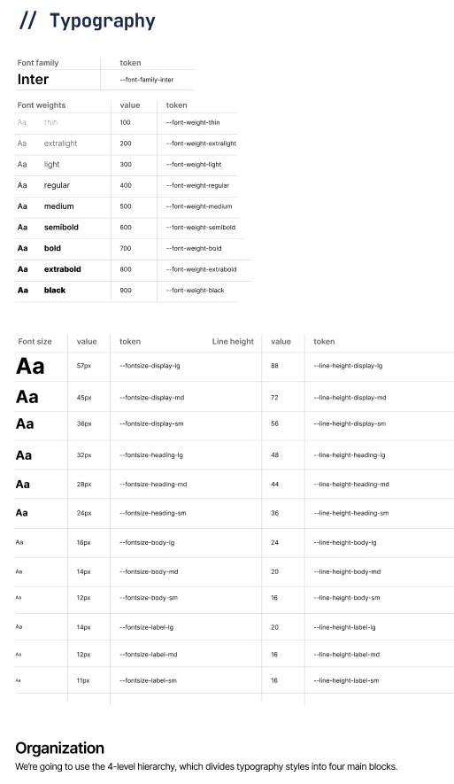
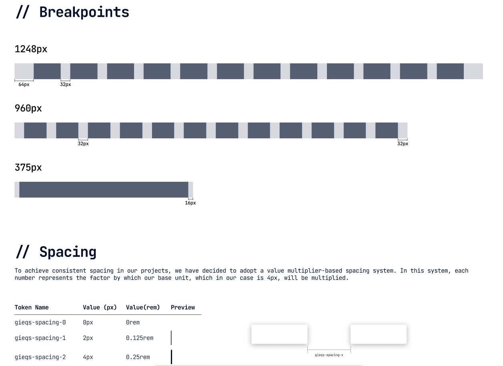
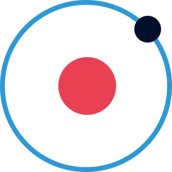
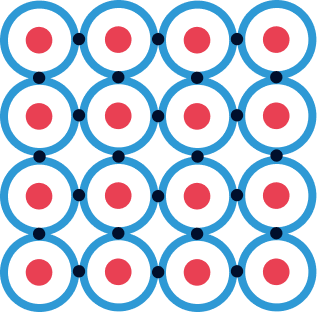
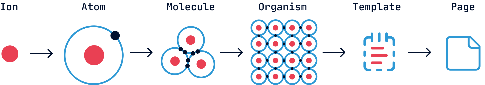

Design Systems: Creando Consistencia Visual a Través de Productos
Imagina que estás trabajando como diseñador de una empresa, encargado de llevar el diseño de múltiples microservicios. El primero te sale muy bien, sin embargo, a la hora de hacer el segundo, notas que no hay mucha coherencia con el primero y que aunque se parecen, tienen algo que no hace que parezcan de la misma empresa. Se usan diferentes fuentes, espaciados, estilos, colores, iconografía...
Una vez terminados los diseños, el cliente te felicita, ya que le ha gustado, sin embargo, al tiempo te escribe, y te dice que si bien ha habido una mejoría con respecto a lo anterior, los microservicios no estaban cohesionados, no había una correlación entre unos y otros, en definitiva, parecían piezas independientes unas de otras, no un ecosistema de la empresa.
Resulta que, frente a esta retroalimentación, te invade cierta frustración. Después de todo el esfuerzo invertido, sigue habiendo problemas de coherencia visual. Decidido a resolver este desafío de una vez por todas, comienzas a investigar y das con una revelación: un término del que nunca habías oído hablar antes, los Design Systems.
¿Design system?
A la hora de explicar qué es un Design System, me gusta hacer una analogía con los legos. Al igual que estas famosas piezas de construcción nos permiten crear estructuras únicas e increíbles, un Design System nos proporciona elementos básicos para construir interfaces digitales. Estos elementos, llamados componentes, son como las piezas de LEGO: reutilizables (se pueden usar en múltiples lugares) y modulares (funcionan de manera independiente pero se integran perfectamente con otros). Y así como LEGO tiene series temáticas (Star Wars, Harry Potter, City) donde todas las piezas comparten una estética coherente y combinan perfectamente entre sí, un Design System garantiza que todos sus elementos "pertenecen a la misma familia" visualmente.

Entrando más en tecnicismos y dejando las analogías a un lado, un Design System es una colección de componentes reutilizables, guiados por principios claros, documentados y estandarizados que permiten a los equipos crear diseños de manera coherente, consistente y eficiente. Además, establece un "lenguaje común" de diseño que facilita enormemente la comunicación entre equipos de diseño, desarrollo y producto.
Ahora que comprendemos qué es un Design System y su importancia para mantener la consistencia visual, surge la pregunta práctica: ¿cómo implementarlo? Crear un sistema completo desde cero puede parecer abrumador, especialmente si no contamos con una estructura clara que guíe el proceso. Afortunadamente, existen metodologías probadas que nos ofrecen un camino definido. Entre ellas destaca una aproximación que, inspirada en principios científicos, nos permite construir sistemas complejos a partir de elementos simples.
Atomic Design
La metodología Atomic Design, creada por Brad Frost, es una de las formas más populares y efectivas de estructurar un Design System. Esta metodología toma inspiración de la química para organizar los componentes de interfaz de forma jerárquica, desde los más simples hasta los más complejos.

Iones (Design Tokens)
Los iones son los elementos más fundamentales y abstractos del sistema. Al igual que en química los iones son partículas cargadas que forman parte de los átomos, en diseño representan las propiedades básicas y variables que definirán todo el sistema:
- Colores (paletas primarias, secundarias, neutros)
- Tipografía (familias, tamaños, pesos)
- Espaciado (sistema de grid, márgenes, paddings)
- Sombras y elevaciones
- Bordes y radios
- Opacidades
- Transiciones y animaciones
Algunos ejemplos



Estos elementos, también conocidos como "Design Tokens", no tienen funcionalidad por sí mismos, pero son cruciales ya que definen la identidad visual del sistema y afectan a todos los demás componentes. Son las propiedades fundamentales que, como variables, pueden modificarse para alterar todo el aspecto del sistema sin cambiar su estructura.
Átomos
Los átomos son los componentes más básicos e indivisibles de un Design System. Al igual que los átomos en la química son los bloques fundamentales de la materia, en diseño representan los elementos más simples de una interfaz:
- Botones
- Campos de texto
- Iconos
- Etiquetas
- Checkboxes
- Selectores simples
- Avatares
Estos elementos pueden implementarse de forma independiente y tienen una función específica, pero no pueden descomponerse más sin perder dicha función. Un botón, por ejemplo, aplica propiedades ioniales (colores, tipografía, espaciado), pero constituye una unidad funcional indivisible.

Moléculas
Las moléculas se forman cuando dos o más átomos se unen para crear componentes con funcionalidades específicas. Algunos ejemplos serían:
- Un campo de búsqueda (combina un campo de texto, un botón y un icono)
- Un grupo de selección (radio buttons con sus etiquetas)
- Una tarjeta simple (combina título, descripción y posiblemente una imagen)
Las moléculas son relativamente simples y se centran en hacer una cosa bien, pero ya proporcionan una funcionalidad tangible para el usuario.
Organismos
Los organismos son componentes más complejos formados por la combinación de moléculas y/o átomos. Representan secciones distintivas de una interfaz:
- Una barra de navegación completa (logo, menú, buscador, botones de cuenta)
- Un formulario de registro (campos, validaciones, botones de envío)
- Un carrusel de productos (con tarjetas de producto, controles de navegación)
- Un pie de página con múltiples columnas de información
Los organismos son componentes lo suficientemente complejos como para constituir secciones completas de una interfaz. 
Plantillas
Las plantillas son esquemas de páginas que muestran cómo se organizan los organismos en un diseño coherente. No contienen contenido real sino que definen la estructura y el layout:
- Template de página de inicio
- Template de página de producto
- Template de formulario de contacto
- Template de blog
Las plantillas actúan como un wireframe de alta fidelidad, mostrando la distribución de los elementos en cada tipo de página.
Páginas
Las páginas son instancias específicas de plantillas que muestran cómo se vería la interfaz con contenido real:
- La página de inicio actual con promociones de temporada
- Una página de producto específico con sus imágenes y descripciones
- Un artículo de blog concreto con su contenido
Las páginas son la manifestación final de todo el sistema y permiten probar cómo funciona el Design System en escenarios reales.

¿Por qué usar Atomic Design?
- Modularidad: Permite crear, probar y mantener componentes de forma independiente.
- Escalabilidad: Facilita la adición de nuevos componentes sin romper los existentes.
- Consistencia: Garantiza que los mismos componentes se utilicen en toda la interfaz.
- Eficiencia: Reduce la duplicación de trabajo al reutilizar componentes.
- Colaboración: Proporciona un lenguaje común para diseñadores y desarrolladores.
Si queráis profundizar más en esta metodología, este libro lo cuenta a la perfección y es del que me ha basado (entre otros): Atomic Design
La metodología Atomic Design nos proporciona un marco estructurado para organizar los componentes de nuestro Design System, desde los elementos más simples hasta las páginas completas. Esta aproximación sistemática no solo facilita la creación y mantenimiento de interfaces coherentes, sino que también refleja muchas de las ventajas inherentes a la implementación de un Design System. Sin embargo, como toda solución, adoptar un Design System conlleva tanto beneficios significativos como ciertos desafíos que debemos considerar. Entender estas implicaciones nos ayudará a evaluar si esta inversión es adecuada para nuestro contexto específico y cómo podemos maximizar su valor mientras mitigamos sus potenciales inconvenientes.
Beneficios y Contras de los Design Systems
La implementación de un Design System es una decisión estratégica que puede transformar profundamente la forma en que una organización aborda el diseño digital. Como cualquier estrategia, es importante sentarnos a analizar los pros y los contras de cada una de las posibles soluciones antes de tomar una decisión.
Beneficios de implementar un Design System
Consistencia y coherencia visual
Quizás el beneficio más evidente y el motivo principal por el que comenzamos esta conversación: un Design System garantiza que todos los productos digitales de una empresa mantengan una apariencia y comportamiento coherentes. Los usuarios perciben una experiencia unificada independientemente del producto o servicio que estén utilizando, fortaleciendo así la identidad de marca.
Eficiencia en el desarrollo
Al contar con componentes predefinidos y reutilizables, los equipos de desarrollo pueden implementar nuevas funcionalidades o productos completos en mucho menos tiempo. No es necesario "reinventar la rueda" cada vez que se crea una nueva interfaz, lo que reduce significativamente los tiempos de entrega.
Mejora en la colaboración entre equipos
Un Design System establece un vocabulario común entre diseñadores, desarrolladores y stakeholders. Esta "lingua franca" facilita la comunicación, reduce malentendidos y agiliza los procesos de revisión y aprobación, creando un flujo de trabajo más armonioso.
Escalabilidad
A medida que una empresa crece y diversifica sus productos digitales, un Design System bien implementado crece con ella. Añadir nuevas funcionalidades o adaptar las existentes resulta más sencillo cuando se parte de una base sólida y estructurada.
Facilita las pruebas y el control de calidad
Al utilizar componentes estandarizados que ya han sido probados exhaustivamente, se reducen los errores y se facilita el proceso de QA. Cada componente puede ser validado individualmente, asegurando que funcione correctamente antes de integrarlo en un contexto más amplio.
Mejora la accesibilidad
Un buen Design System incorpora consideraciones de accesibilidad desde su concepción. Esto asegura que todos los productos que lo utilicen cumplan con estándares de accesibilidad sin requerir esfuerzos adicionales por parte de los equipos de diseño o desarrollo.
Reduce la deuda técnica y de diseño
Al establecer estándares claros y mantener una documentación actualizada, se minimiza la acumulación de "parches" o soluciones improvisadas que suelen generar problemas a largo plazo.
Contras y desafíos
Inversión inicial significativa
Desarrollar un Design System completo requiere una inversión considerable de tiempo, recursos y esfuerzo. Es un proyecto a medio-largo plazo cuyos beneficios no siempre son inmediatamente visibles, lo que puede dificultar su justificación en entornos donde se priorizan los resultados a corto plazo.
Resistencia al cambio
Implementar un Design System implica cambios en los flujos de trabajo establecidos. Es común encontrar resistencia por parte de equipos acostumbrados a trabajar con mayor autonomía o con sus propias metodologías.
Mantenimiento continuo
Un Design System no es un proyecto que se completa y se archiva; requiere mantenimiento, actualizaciones y evolución constantes. Sin un compromiso firme con su mantenimiento, puede quedar obsoleto rápidamente o, peor aún, convertirse en un obstáculo en lugar de una herramienta.
Puede limitar la creatividad
Algunos diseñadores pueden sentir que trabajar dentro de los confines de un sistema limita su libertad creativa. Encontrar el equilibrio entre estandarización y flexibilidad es uno de los mayores desafíos en el diseño y gestión de estos sistemas.
Complejidad en su implementación
Para organizaciones grandes o con ecosistemas digitales extensos, la transición hacia un Design System puede resultar extremadamente compleja, especialmente si implica modificar productos existentes para adaptarlos al nuevo sistema.
Requiere compromiso organizacional
El éxito de un Design System depende del compromiso de toda la organización, desde la dirección hasta los equipos operativos. Sin este apoyo transversal, es probable que el proyecto no alcance todo su potencial.
Curva de aprendizaje
Los nuevos miembros del equipo necesitarán tiempo para familiarizarse con el Design System, su estructura, componentes y reglas. Esto puede ralentizar inicialmente la incorporación de nuevos talentos.
Tras comprender los múltiples beneficios y desafíos asociados a los Design Systems, surge inevitablemente una cuestión pragmática: ¿cuándo es realmente ventajoso invertir en su desarrollo? No todos los contextos empresariales o proyectos justifican esta inversión de recursos. Al igual que cualquier herramienta estratégica, su implementación debe responder a necesidades específicas y alinearse con los objetivos organizacionales. Analicemos, por tanto, los escenarios donde un Design System puede marcar una diferencia significativa y aquellos donde quizás existan alternativas más eficientes.
¿Cuándo tiene sentido implementar un Design System?
Un Design System resulta especialmente valioso en los siguientes escenarios:
- Cuando la empresa gestiona múltiples productos digitales que necesitan mantener coherencia visual y funcional.
- En equipos grandes o distribuidos donde la comunicación y coordinación suponen un desafío.
- En proyectos a largo plazo donde la eficiencia en el desarrollo y mantenimiento es crucial.
- Cuando se busca escalar rápidamente la capacidad de producción digital sin comprometer la calidad.
Por el contrario, podría no ser la mejor inversión para:
- Startups en fases muy tempranas con recursos limitados y un único producto.
- Proyectos puntuales o de corta duración.
- Equipos muy pequeños donde la comunicación y consistencia se gestionan de manera natural.
La decisión de implementar un Design System debe basarse en un análisis cuidadoso de las necesidades específicas, recursos disponibles y objetivos a largo plazo de la organización. Como hemos visto, no es una solución universal, pero cuando se implementa en el contexto adecuado, puede transformar radicalmente la eficiencia y calidad del diseño digital.
Una vez evaluada la pertinencia de implementar un Design System y habiendo decidido embarcarse en este viaje, surge inevitablemente la pregunta práctica: ¿por dónde empezamos? Hasta ahora, hemos explorado los fundamentos conceptuales, desde la estructura atómica hasta las consideraciones estratégicas, pero el camino desde la teoría hasta la implementación técnica requiere una hoja de ruta clara. A continuación, esbozaremos los siguientes pasos que transformarán estos conceptos en herramientas tangibles para nuestros equipos de diseño y desarrollo.
What's Next: Del Concepto a la Implementación
El verdadero valor de un Design System se materializa cuando pasa de ser un concepto a convertirse en un conjunto de herramientas prácticas que los equipos utilizan diariamente. Este proceso de implementación técnica implica varios pasos fundamentales que conectan la teoría con la práctica.
Definición y Documentación de Design Tokens
El primer paso consiste en transformar nuestros "iones" en tokens de diseño concretos y documentados. Esto implica:
- Codificar cada valor de color, tipografía y espaciado en variables utilizables
- Establecer convenciones de nomenclatura claras y coherentes
- Documentar el propósito y uso adecuado de cada token
- Crear sistemas de versionado para gestionar su evolución
Desarrollo de la Librería de Componentes
Con los tokens definidos, el siguiente paso es desarrollar una librería de componentes funcionales que:
- Implemente los principios atómicos discutidos anteriormente
- Traduzca los diseños visuales en código reutilizable
- Incorpore los tokens como variables que determinan la apariencia
- Sea accesible desde diferentes plataformas y frameworks
Este proceso puede implicar la creación de componentes en diferentes tecnologías según las necesidades del equipo (React, Vue, Angular, etc.) y requiere una estrecha colaboración entre diseñadores y desarrolladores.
Estrategias de Integración y Adopción
La implementación técnica debe complementarse con estrategias que faciliten la adopción del sistema por parte de todos los equipos implicados. Esto incluye:
- Creación de entornos de prueba y visualización de componentes (storybooks)
- Desarrollo de guías de implementación técnica
- Establecimiento de flujos de trabajo para la contribución y mantenimiento
- Formación y acompañamiento a los equipos durante la transición
En próximos artículos, profundizaremos en cada uno de estos aspectos, explorando herramientas específicas, metodologías de implementación y casos prácticos que ilustrarán el proceso completo de creación e integración de un Design System en diferentes contextos organizacionales. Desde la configuración de repositorios de tokens hasta la implementación de componentes en código, pasando por estrategias efectivas de documentación y gestión del cambio, este viaje apenas comienza.
Referencias y Lecturas Recomendadas
Este artículo se ha nutrido de la experiencia y conocimientos compartidos por profesionales y expertos del sector. A continuación, presento algunas referencias fundamentales para quienes deseen profundizar en el mundo de los Design Systems:
Libros
- Frost, B. (2016). Atomic Design. https://atomicdesign.bradfrost.com/ Este libro, disponible gratuitamente online, establece las bases de la metodología Atomic Design que hemos explorado extensamente en este artículo.
Artículos y Recursos Web
-
Nielsen Norman Group. (2022). "Design Systems 101". https://www.nngroup.com/articles/design-systems-101/ Una introducción concisa pero completa al concepto de Design Systems por uno de los grupos más respetados en UX.
-
Toman, J. (2023). "Beyond Atomic Design: Ions, Quarks and Design Tokens". https://medium.com/designsystemsmastery/beyond-atomic-design-tokens-and-subatomic-particles Exploración de las extensiones al modelo Atomic tradicional, incluyendo el concepto de iones que hemos integrado en nuestro enfoque.
-
Clark, J. (2021). "The Spectrum of Design Systems". https://spectrum.adobe.com/page/design-systems/ Un análisis de diferentes enfoques y niveles de madurez en los Design Systems. Jonatan Hernandez. "LEGO, el mejor mentor de Design System | Parte 2 de 2". https://jonatanhernandez.substack.com/p/lego-el-mejor-mentor-de-design-system-69b Otra perspectiva sobre los iones.
Design Systems de Referencia
-
Material Design (Google) Uno de los Design Systems más completos y documentados, que ha influido significativamente en el diseño digital moderno.
-
Carbon Design System (IBM) Un excelente ejemplo de Design System orientado a productos empresariales con consideraciones de accesibilidad integradas.
-
Polaris (Shopify) Notable por su documentación exhaustiva y enfoque centrado en principios de diseño claros.
-
Sistema de Diseño Atlassian Un ejemplo de Design System que equilibra consistencia con flexibilidad para diversos productos.